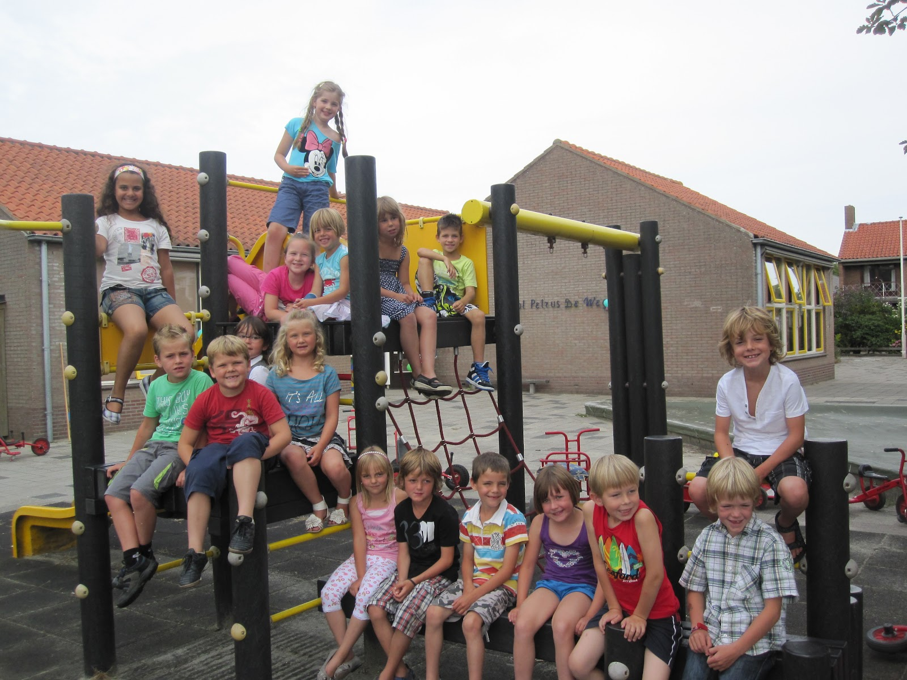

Home
Over mij
Opleidingen
Basisschool
Middelbare school
Vervolgopleiding
Werkervaring
Contact

Previous
Next
Sint Petrus de Wegwijzer
━━━━━━━━━━━━━━━━━━━━━━━━━━━━━━━━━━━━━━━━━━━━━━━━━━━━━━━━━━━━━
Dit is de Basisschool waar ik op zat hij is nu samengevoegd met een andere school en ze hebben ook een andere naam gekregen. Ik heb hier 8 jaar opgezeten en ben geen 1x blijven zitten. De locatie van deze school is in oostburg.
Website van de school:
Sint Petrus de Wegwijzer